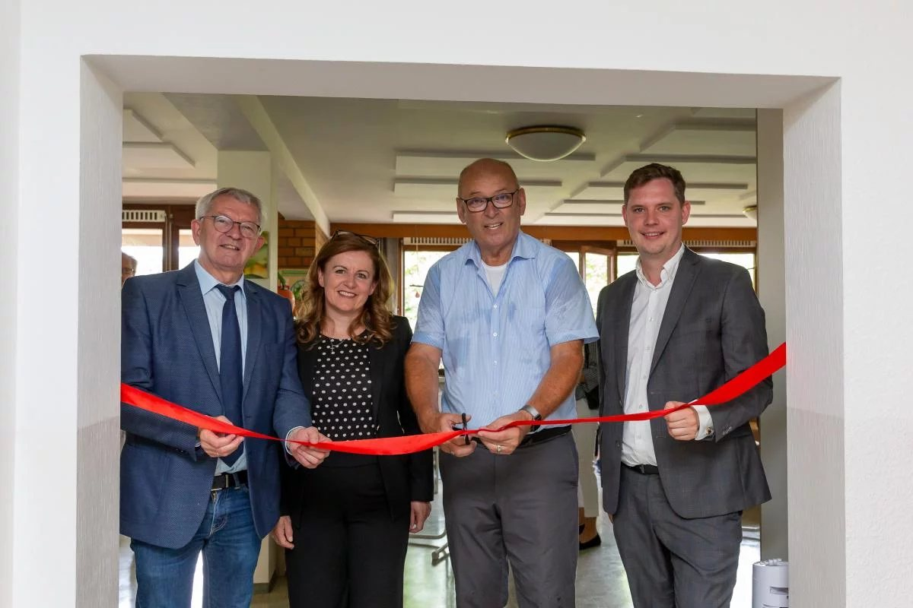

Manchmal muss ein Kind von einem Tag auf den anderen aus seiner Familie heraus. Das Don Bosco Jugendwerk Bamberg gibt ihm dann einen geschützten Ort. Die Stiftung hat diesen Schutzraum möglich gemacht.
DON BOSCO JUGENDWERK BAMBERG · BESUCH AM NEUEN FAHRRADHAUS
DIESES PROJEKT IM FÖRDERWEG
Erst ein sicherer Ort. Dann der nächste Schritt.
Das Jugendwerk begleitet Kinder und Jugendliche über mehrere Stufen. Die Stiftung setzt dort an, wo Schutz am dringendsten ist.
11
SCHWERPUNKT
Halt geben
Die Inobhutnahme schützt Kinder in akuten Krisen, rund um die Uhr.
22
ANGEBOT DES JUGENDWERKS
Stärken entdecken
Spiel, Sport, Zirkus und Natur zeigen jungen Menschen, was in ihnen steckt.
33
ANGEBOT DES JUGENDWERKS
Fähigkeiten entwickeln
Begleitung während Schule und Berufsausbildung stärkt die Selbstständigkeit.
44
WEITERFÜHRENDE PERSPEKTIVE
Selbstbestimmt leben
Den eigenen Lebensweg Schritt für Schritt selbst gestalten.
DIE PROJEKTGESCHICHTE
Damit aus einem Neuanfang eine Zukunft wird.
01 / AUSGANGSLAGE
Wenn zu Hause kein sicherer Ort mehr ist.
Auch in Bamberg nehmen Armut und Wohnungslosigkeit zu. Geraten Familien unter Druck, trifft es die Kinder besonders hart.
Ist das Wohl eines Kindes akut gefährdet, muss es kurzfristig aus seiner Familie genommen werden. In diesem Moment braucht es vor allem einen Ort, an dem es ankommen und zur Ruhe kommen kann.
02 / WAS DAS JUGENDWERK DARAUS MACHT
Eine Wohngruppe, die rund um die Uhr da ist.
Am 30. Juni 2023 eröffnete das Don Bosco Jugendwerk seine Inobhutnahme. In einer Wohngruppe mit bis zu sechs Plätzen betreuen pädagogische Fachkräfte Kinder und Jugendliche von fünf bis fünfzehn Jahren, Tag und Nacht. Der Aufenthalt dauert so kurz wie nötig und höchstens sechs Monate.
In dieser Zeit klärt das Team gemeinsam mit dem Jugendamt, wie es weitergeht. Eltern, Schule sowie Therapeutinnen und Therapeuten sind eingebunden.
Das Jugendwerk gehört zu den Salesianern Don Boscos und begleitet seit über 90 Jahren Kinder, Jugendliche und ihre Familien. Rund 180 Mitarbeitende arbeiten dort.
03 / DER BEITRAG DER STIFTUNG
Ein Schutzraum. Und ein Platz fürs Fahrrad.
Die Chance Jugend Stiftung hat die Eröffnung der Inobhutnahme 2023 ermöglicht. 2026 hat sie zugesagt, auch die Erweiterung zu fördern. Künftig sollen dort zusätzlich Kleinkinder von null bis fünf Jahren Schutz finden.

Eröffnung der Inobhutnahme am 30. Juni 2023
Manchmal hilft auch ganz Praktisches. Am Standort Stephansberg fehlte Platz für die Fahrräder der Jugendlichen. Mit Unterstützung der Stiftung steht dort jetzt ein Fahrradhaus. Beim Besuch nach der Fertigstellung stellte Jakob, einer der Jugendlichen, es selbst vor.
04 / WAS ES BRINGT
Aus Sicherheit wird Zuversicht.
Ein Kind, das in der Krise Schutz findet, kann wieder Vertrauen fassen. Darauf baut alles Weitere auf: Schule, Ausbildung, ein eigener Weg.
Stiftung und Jugendwerk arbeiten seit vielen Jahren zusammen. Ihre Unterstützung hilft dort, wo junge Menschen in Bamberg einen Neuanfang brauchen.
JUNGE MENSCHEN IN BAMBERG UNTERSTÜTZEN
Ein sicherer Ort. Ein neuer Anfang.
Im Gespräch klären wir den aktuellen Förderbedarf und passende Wege, sich einzubringen.